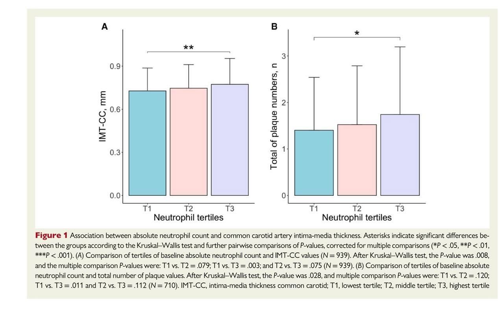
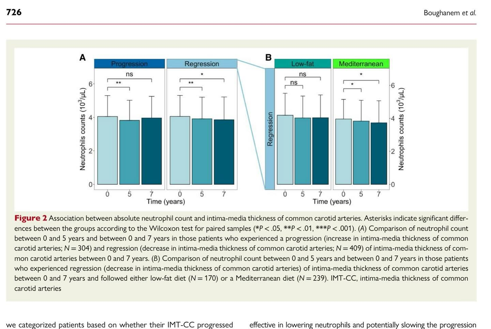
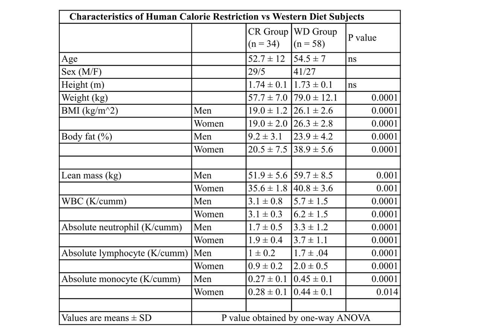
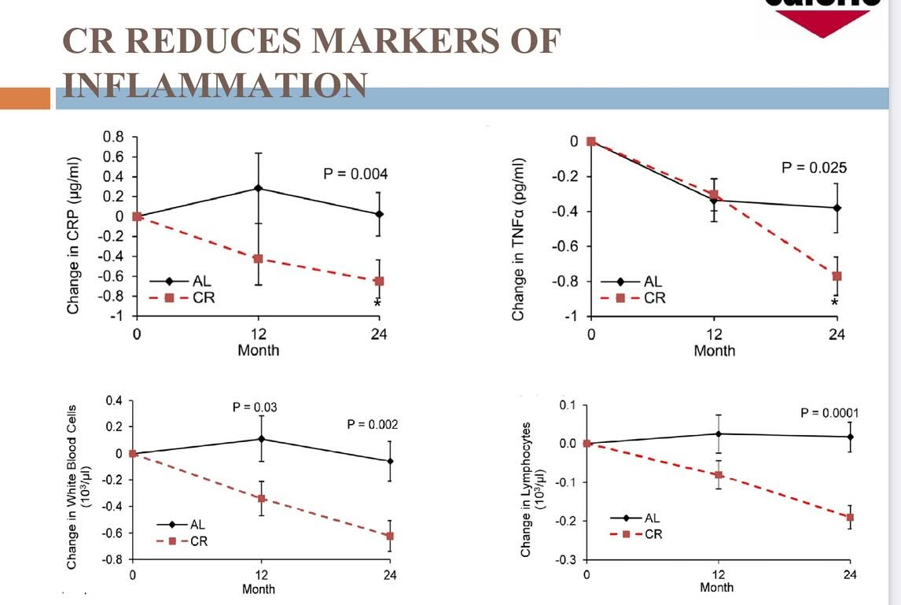

The neutrophil count in your blood is an emerging risk factor for heart disease.
So are the ratios:
neutrophils/erythrocytes
neutrophils/HDL
These are types of white blood cells produced by your innate immune system. A basic CBC blood test gives you these values.
Higher neutrophils and higher ratios indicate greater systemic inflammation, and greater risk of heart disease.
The CORDIOPREV randomized controlled trial demonstrated that a traditional mediterranean diet regresses plaque and reduces risk of heart attacks and strokes (MACE) by 25%. Reference:
↪ CORDIOPREV: Mediterranean diet shrank carotid plaque and cut recurrent events about 25%
The latest finding from CORDIOPREV is that this diet also lowers neutrophil counts significantly, over the 7 year study period.
#mediterraneanHD #cordioprevHD #neutrophilsHD #inflammationHD #erythrocytesHD
Emerging research is shedding light on the critical role of the innate immune system in the development of atherosclerosis—a link well-established in mice but still under investigation in humans. A new study in EHJ from the CORDIOPREV trial offers new insights that could reshape our understanding of cardiovascular disease progression and prevention.
Paper · European Heart Journal · 2025Mediterranean diet, neutrophil count, and carotid intima-media thickness in secondary prevention: the CORDIOPREV studyBackground and Aims Several studies have supported the role of innate immune system as a key factor in the sterile inflammation underlying the pathophysiology of atherosclerosis in mice. However, its involvement in humans remains unclear. This study aimed to explore the association between neutrophil count, and the intima-media thickness of common carotid arteries (IMT-CC), as well as the potential impact of…doi.org
🔍 Key Findings from the CORDIOPREV Study
- Neutrophil Count and Atherosclerosis: At baseline, individuals with higher neutrophil counts had significantly greater intima-media thickness of the common carotid arteries (IMT-CC) and more carotid plaques.
- Risk Associations: Elevated neutrophil count, neutrophil-to-erythrocyte ratio, and neutrophil-to-HDL ratio were all linked to an increased likelihood of having an IMT-CC > 0.9 mm—an important marker of atherosclerosis progression.
- Long-Term Impact: Over a 5- to 7-year period, each unit increase in neutrophil count was associated with a measurable increase in IMT-CC, highlighting the role of chronic low-grade inflammation in cardiovascular disease.
🥗 The Power of Diet: Mediterranean vs. Low-Fat
One of the most compelling findings was the impact of dietary intervention:
- Patients following a Mediterranean diet showed a significant reduction in neutrophil count after 5 and 7 years, particularly in those experiencing a regression of IMT-CC.
- This suggests that dietary strategies can influence inflammatory markers, potentially slowing or even reversing the progression of atherosclerosis.
🔬 Calorie Restriction: The Most Potent Neutrophil-Lowering Strategy
In addition to dietary patterns, our research also highlights calorie restriction with optimal nutrition as the most powerful intervention for reducing circulating white blood cells, neutrophil and lymphocyte levels. In two of our publications, we demonstrated that calorie restriction not only lowers systemic inflammation but also significantly decreases neutrophil counts, contributing to improved cardiovascular health and metabolic function.
Paper · Geroscience · 2018Calorie restriction induces reversible lymphopenia and lymphoid organ atrophy due to cell redistribution.Calorie restriction (CR) without malnutrition increases life span and health span in multiple model organisms. In non-human and human primates, CR causes changes that protect against several age-related pathologies, reduces inflammation, and preserves or improves cell-mediated immunity. However, CR has also been shown to exhibit adverse effects on certain organs and systems, including the immune system, and to…pubmed.ncbi.nlm.nih.gov
Paper · Aging (Albany NY) · 2016Long-term moderate calorie restriction inhibits inflammation without impairing cell-mediated immunity: a randomized controlled trial in non-obese humans.Calorie restriction (CR) inhibits inflammation and slows aging in many animal species, but in rodents housed in pathogen-free facilities, CR impairs immunity against certain pathogens. However, little is known about the effects of long-term moderate CR on immune function in humans. In this multi-center, randomized clinical trial to determine CR's effect on inflammation and cell-mediated immunity, 218 healthy…pubmed.ncbi.nlm.nih.gov



